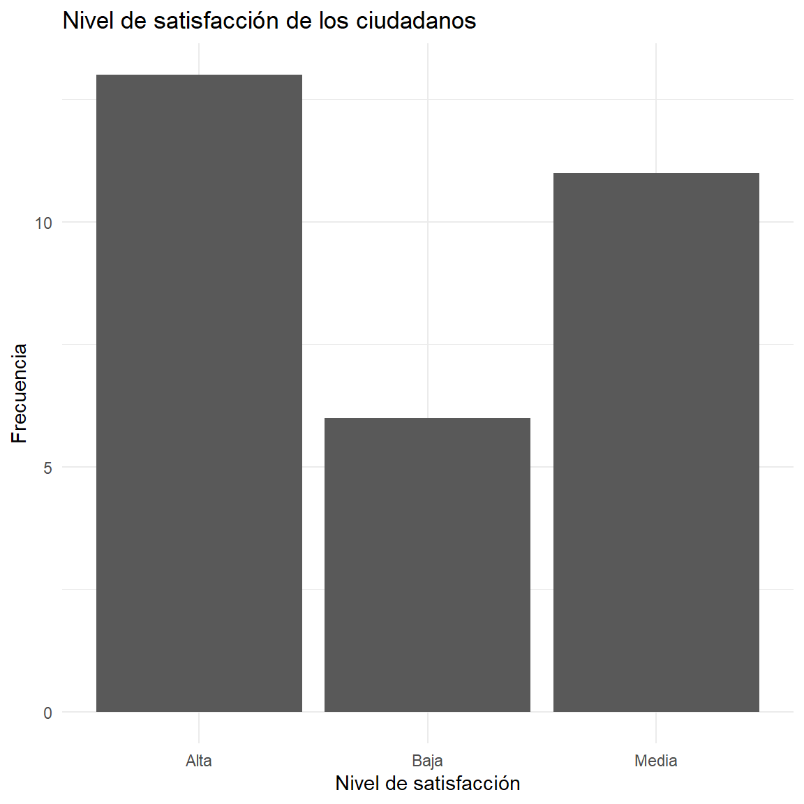

Una distribución de frecuencias constituye una de las herramientas fundamentales del análisis estadístico descriptivo. Su propósito es organizar y resumir un conjunto de datos mediante el conteo de las veces que aparece cada valor o categoría de una variable.
Cuando se analiza una sola variable, se construye una distribución de frecuencias unidimensional. Cuando se estudian simultáneamente dos variables, se utiliza una distribución de frecuencias bidimensional, también conocida como tabla de contingencia cuando las variables son categóricas.
Estas herramientas permiten transformar grandes cantidades de información en estructuras organizadas que facilitan la interpretación, comparación y representación gráfica de los datos.
2.1 DISTRIBUCION DE FRECUENCIAS UNIDIMENSIONALES
Concepto
Una distribución de frecuencias unidimensional organiza los valores observados de una única variable junto con el número de veces que aparece cada valor o categoría.
Sea:
X={x_1,x_2,\ldots,x_n}
un conjunto de n observaciones de una variable estadística X.
La distribución de frecuencias permite determinar cuántas observaciones corresponden a cada valor o categoría de la variable.
2.2 Elementos de una frecuencia
Una tabla de frecuencias puede contener las siguientes columnas:
Símbolo
Nombre
Interpretación
x_i
Valor o categoría
Valor observado de la variable
f_i
Frecuencia absoluta
Número de veces que aparece x_i
F_i
Frecuencia absoluta acumulada
Número de observaciones hasta x_i
h_i
Frecuencia relativa
Proporción de observaciones correspondiente a x_i
H_i
Frecuencia relativa acumulada
Proporción acumulada hasta x_i
\\%
Porcentaje
Frecuencia relativa expresada en porcentaje
3 .Frecuencia absoluta
La frecuencia absoluta de un valor x_i, representada por f_i, corresponde al número de veces que dicho valor aparece en el conjunto de datos.
Se cumple:
\sum_{i=1}^{k} f_i=n
donde:
k = número de valores o categorías.
f_i = frecuencia absoluta.
n = tamaño de la muestra.
Ejemplo
3.1 Frecuencia absoluta acumulada
La frecuencia absoluta acumulada se representa mediante F_i y corresponde a la suma progresiva de las frecuencias absolutas.
Se calcula mediante:
F_i=\sum_{j=1}^{i}f_j
Por tanto:
F_1=f_1
F_2=f_1+f_2
F_3=f_1+f_2+f_3
y así sucesivamente.
La última frecuencia acumulada debe ser igual al tamaño de la muestra:
satisfaccion
Alta Baja Media
0.4333333 0.2000000 0.3666667
Expresado en porcentaje
Ver código
round(prop.table(table(satisfaccion)) *100, 2)
satisfaccion
Alta Baja Media
43.33 20.00 36.67
La elección del gráfico depende del tipo de variable.
Tipo de variable Gráfico recomendado Cualitativa nominal Barras Cualitativa ordinal Barras ordenadas Cuantitativa discreta Barras Cuantitativa continua Histograma Cuantitativa Polígono de frecuencias Cuantitativa Ojiva para frecuencias acumuladas
4.3 Gráfico de barras library(ggplot2)
Ver código
library(ggplot2)ggplot(data.frame(satisfaccion), aes(x = satisfaccion)) +geom_bar() +labs(title ="Nivel de satisfacción de los ciudadanos",x ="Nivel de satisfacción",y ="Frecuencia" ) +theme_minimal()

4.4 Distribución de frecuencias para datos agrupados
Cuando una variable cuantitativa continua presenta muchos valores diferentes, puede ser conveniente agruparlos en intervalos de clase.
Por ejemplo:
[20,30),\quad [30,40),\quad [40,50),\quad [50,60)
Cada intervalo contiene un conjunto de valores.
4.5 Elementos de una distribución agrupada
Para cada intervalo pueden calcularse:
Límite inferior. Límite superior. Marca de clase. Frecuencia absoluta. Frecuencia acumulada. Frecuencia relativa. Frecuencia relativa acumulada.
Una distribución de frecuencias bidimensional estudia simultáneamente dos variables estadísticas.
Sean:
X \quad \text{y} \quad Y
dos variables observadas sobre los mismos individuos.
El objetivo consiste en analizar cómo se distribuyen conjuntamente los valores de ambas variables.
Por ejemplo:
Edad y satisfacción. Nivel educativo y satisfacción. Estrato y acceso a un programa social. Modalidad de atención y satisfacción. Género y tipo de servicio utilizado.
5.2 Tabla de contingencia
Cuando las dos variables son cualitativas o categóricas, la distribución bidimensional suele representarse mediante una tabla de contingencia.
Supongamos que se estudian:
X: modalidad de atención. Y: nivel de satisfacción.
Este gráfico resulta especialmente útil cuando los tamaños de los grupos son diferentes.
5.12 Distribución bidimensional y asociación
Una de las principales aplicaciones de las tablas bidimensionales consiste en estudiar si existe una posible relación o asociación entre dos variables.
Por ejemplo:
\text{Modalidad de atención}
\quad\longleftrightarrow\quad
\text{Satisfacción}
Si las distribuciones condicionales son muy diferentes entre las modalidades, puede existir evidencia descriptiva de asociación.
Sin embargo, una diferencia descriptiva no significa necesariamente que exista una asociación estadísticamente significativa.
Para evaluar formalmente la asociación entre dos variables categóricas puede utilizarse, entre otras herramientas, la prueba chi-cuadrado de independencia.
5.13 Prueba chi-cuadrado en R
A partir de una tabla de contingencia:
chisq.test(tabla)
La hipótesis nula es:
H_0:
\text{Las variables son independientes}
Mientras que la hipótesis alternativa es:
H_1:
\text{Las variables no son independientes}
La decisión estadística se basa generalmente en el valor-p.
Si:
p<\alpha
se rechaza H_0.
Si:
p\geq\alpha
no se rechaza H_0.
Es habitual utilizar:
\alpha=0.05
En R podemos crear una función reutilizable:
Función para construir una tabla de frecuencias
Ver código
tabla_frecuencias <-function(x) { fi <-table(x) tabla <-data.frame(Valor =names(fi),fi =as.vector(fi) ) tabla$Fi <-cumsum(tabla$fi) tabla$hi <- tabla$fi /sum(tabla$fi) tabla$Hi <-cumsum(tabla$hi) tabla$Porcentaje <- tabla$hi *100return(tabla)}tabla <-tabla_frecuencias(satisfaccion)knitr::kable( tabla,digits =2,col.names =c("Valor","Frecuencia absoluta (fi)","Frecuencia acumulada (Fi)","Frecuencia relativa (hi)","Frecuencia relativa acumulada (Hi)","Porcentaje (%)" ),caption ="Distribución de frecuencias de la satisfacción")
Distribución de frecuencias de la satisfacción
Valor
Frecuencia absoluta (fi)
Frecuencia acumulada (Fi)
Frecuencia relativa (hi)
Frecuencia relativa acumulada (Hi)
Porcentaje (%)
Alta
13
13
0.43
0.43
43.33
Baja
6
19
0.20
0.63
20.00
Media
11
30
0.37
1.00
36.67
6 .Resumen de fórmulas Frecuencia absoluta
f_i
Frecuencia absoluta acumulada
F_i=\sum_{j=1}^{i}f_j
Frecuencia relativa
h_i=\frac{f_i}{n}
Frecuencia relativa acumulada
H_i=\sum_{j=1}^{i}h_j
Porcentaje
p_i=100h_i
Frecuencia conjunta
n_{ij}
Frecuencia marginal de X
n_{i.}=\sum_jn_{ij}
Frecuencia marginal de Y
n_{.j}=\sum_in_{ij}
Frecuencia relativa conjunta
h_{ij}=\frac{n_{ij}}{n}
Frecuencia condicional
h_{j|i}=\frac{n_{ij}}{n_{i.}}
Amplitud
A=\frac{R}{k}
Rango
R=X_{\max}-X_{\min}
Marca de clase
x_i=\frac{L_i+U_i}{2}
7 .Conclusion
En conclusión, las distribuciones de frecuencias constituyen una herramienta fundamental dentro de la estadística descriptiva, ya que permiten organizar, resumir y presentar de manera clara la información obtenida de un conjunto de datos. A través de estas distribuciones es posible transformar una cantidad de datos que puede resultar difícil de interpretar en tablas estructuradas que facilitan el análisis y la comprensión de los resultados.
La distribución de frecuencias unidimensional permite estudiar una sola variable y determinar cómo se distribuyen sus valores o categorías. Para ello, se pueden utilizar diferentes tipos de frecuencias, como la frecuencia absoluta, la frecuencia absoluta acumulada, la frecuencia relativa, la frecuencia relativa acumulada y el porcentaje. Cada una proporciona una perspectiva diferente de los datos: mientras la frecuencia absoluta indica cuántas veces aparece un determinado valor, la frecuencia relativa permite conocer qué proporción representa respecto al total de observaciones.
Por otra parte, las distribuciones de frecuencias bidimensionales permiten estudiar simultáneamente dos variables observadas sobre los mismos individuos. Estas distribuciones son especialmente importantes porque permiten analizar cómo se comportan conjuntamente las variables mediante frecuencias conjuntas, marginales y condicionales. En el caso de variables categóricas, este análisis puede organizarse mediante tablas de contingencia, facilitando la identificación de posibles patrones o diferencias entre los grupos estudiados.
Un aspecto importante del análisis bidimensional es que los porcentajes deben interpretarse correctamente, indicando si se calculan sobre el total de la muestra, por filas o por columnas. Esta distinción es fundamental para evitar interpretaciones incorrectas de los resultados. Además, aunque una diferencia entre distribuciones pueda mostrar evidencia descriptiva de una posible relación entre dos variables, esto no significa necesariamente que exista una asociación estadísticamente significativa. Para este propósito, cuando corresponde, puede utilizarse la prueba chi-cuadrado de independencia.
El uso de R y RStudio facilita considerablemente este proceso, debido a que permite automatizar la construcción de tablas, el cálculo de frecuencias y la elaboración de representaciones gráficas. Funciones como table() permiten obtener frecuencias absolutas, prop.table() permite calcular frecuencias relativas, cumsum() facilita el cálculo de frecuencias acumuladas y xtabs() permite construir tablas de contingencia. Asimismo, mediante ggplot2 es posible representar los resultados utilizando gráficos de barras, histogramas y barras proporcionales, de acuerdo con las características de las variables analizadas.
También es fundamental identificar correctamente el tipo de variable antes de construir una distribución de frecuencias. Las variables cualitativas pueden representarse mediante categorías, mientras que las variables cuantitativas pueden ser discretas o continuas. En el caso de variables cuantitativas continuas con muchos valores diferentes, puede ser conveniente agrupar los datos en intervalos de clase y utilizar herramientas como la regla de Sturges para determinar aproximadamente el número de intervalos.
En el contexto de la Administración Pública, estas herramientas tienen una aplicación importante, debido a que permiten analizar información relacionada con ciudadanos, servicios públicos, satisfacción, edad, ingresos, modalidad de atención, estrato socioeconómico y número de trámites realizados. De esta manera, las distribuciones de frecuencias pueden contribuir a organizar la información y proporcionar una base descriptiva para comprender diferentes situaciones presentes en una población o muestra.
Finalmente, el análisis estadístico debe ir más allá de la elaboración mecánica de tablas. Es necesario interpretar los resultados teniendo en cuenta el contexto de la investigación, seleccionar el tipo de frecuencia y representación gráfica apropiados y diferenciar entre una descripción de los datos y una conclusión estadística. Por tanto, el trabajo conjunto entre los fundamentos teóricos de la estadística y las herramientas computacionales de R/RStudio permite desarrollar un proceso de análisis más organizado, reproducible y comprensible, desde la exploración inicial de los datos hasta su interpretación final.